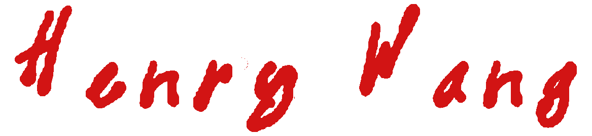
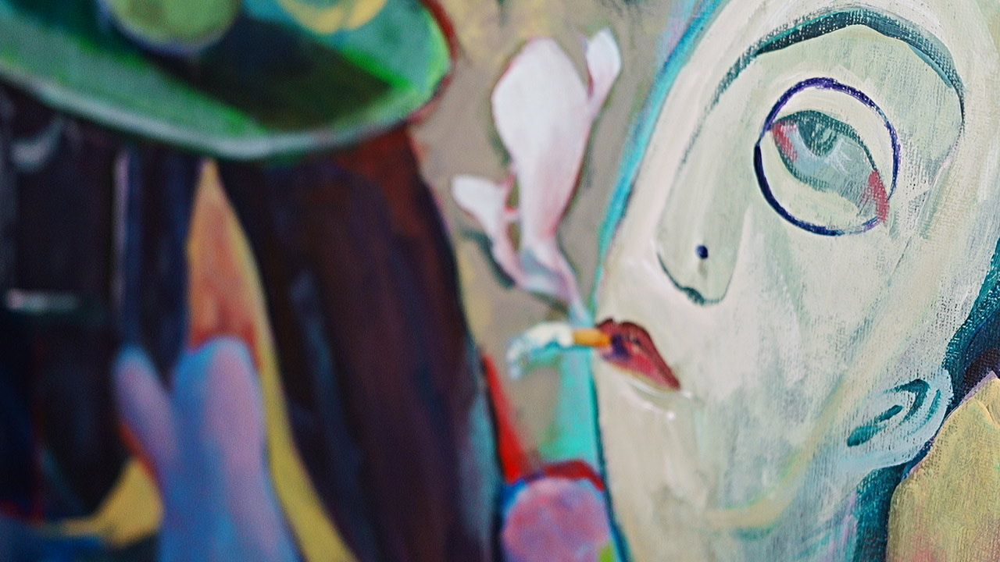
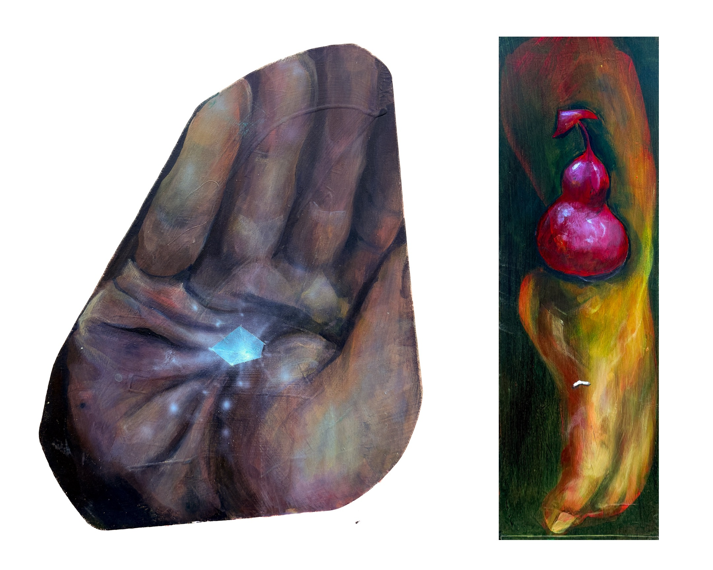
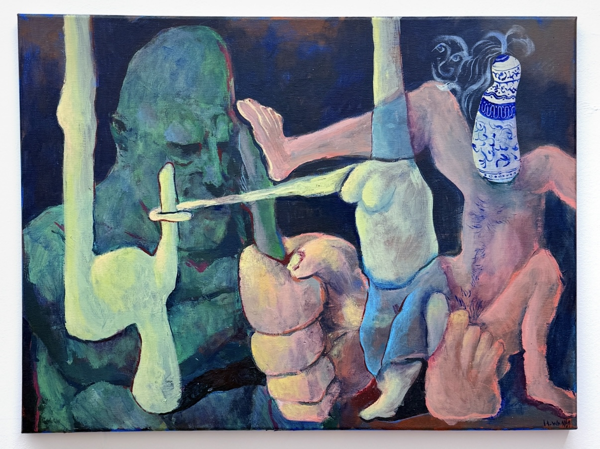
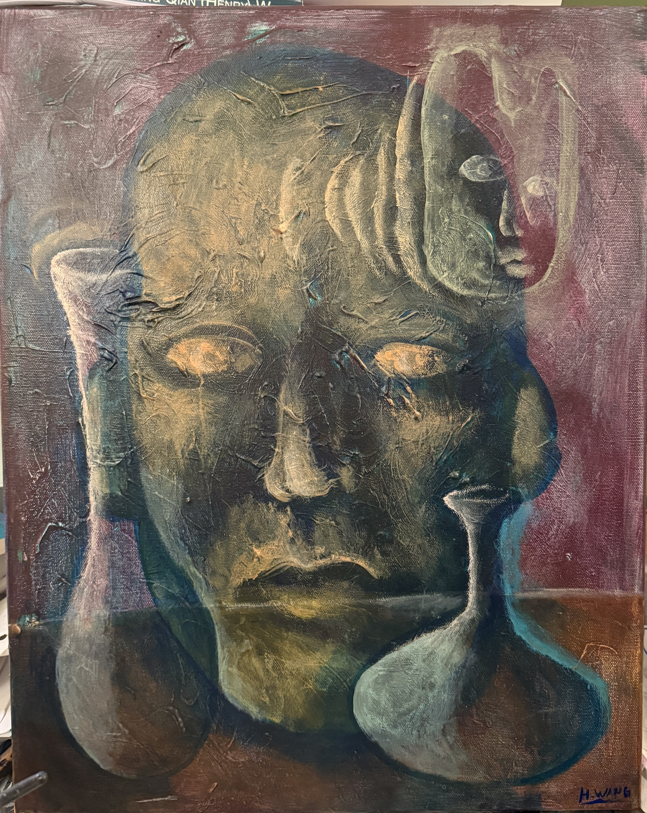
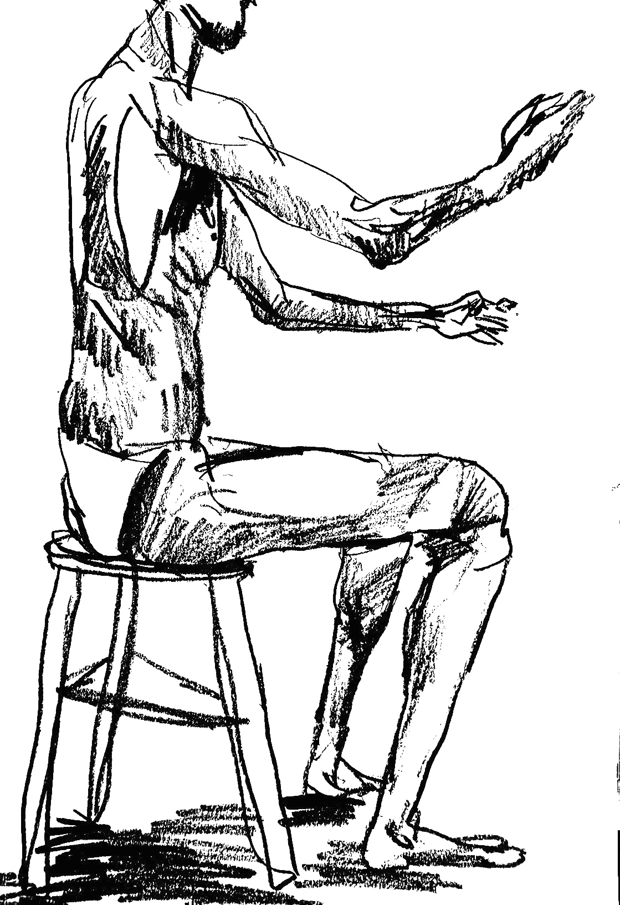
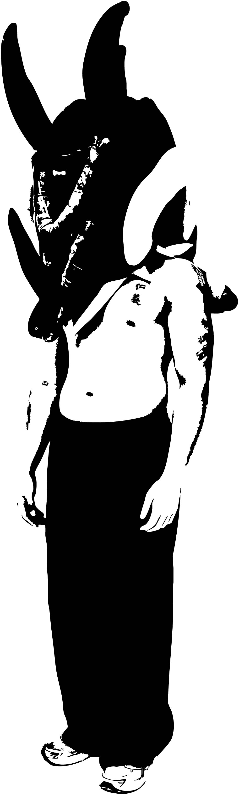

- 01 — Being
- 02 — Country Boy
- 03 — Cubic Liminal
- 04 — Dancer's Hemorrhage
- 05 — Dinner For One
- 06 — Stay
- 07 — The Way Forward









From the earliest time the idea of personifying the environment was memorialized, it has always lingered in my consciousness. Whether it was a smoky street, soft beanbags, or the smell of cocoa beans in the coffee machine, all left the remnants of being human. Growing up in Beijing, China, everything was loud, rambunctious, and lively. It reminded me of how intense human interactions were in a world so different from the West. My grandpa's morning routine of waking us up at 6:30 am sharp for his daily exercise is undoubtedly warm. These small rocks of memory on the grand path have become my stepping stone, delving into early memories of feeling loved, confused, sad, and despairing. Constantly moving in my life shaped these experiences into nostalgia, often looking back on them to reminisce about the "good old times", where art meant nothing more than a ballpoint pen on a piece of lined paper.
Through painting, I began wandering. Both mentally and physically, creating characters of my own imagination to reiterate and represent the void created by many incidents of my daily life. Colours; there, I was always bewildered by the sheer prominence that a colour could hold. Red for fury, blue for sadness, white for purity, and so on. Throughout the experiments, I have learnt to control and manipulate colours to work in my favour and to take chances to prosper in every aspect of my work. Certain colours for absurdism, ones that have no purpose being layered together, when I fixated on a glimpse of a porcelain vase in the Forbidden City back in the old country. It opened a window to my rooted imagination in culture, adaptivity, and relationships.
Idioms, phenomena, and vague imagery. Many of my paintings and installations primarily depend on these three ideals. Form, composition, and configuration are the basis for how I portray my work, in a very specific way that captures both the essence of the material and the unseen forces beyond it. Sometimes rational, sometimes not. Form becomes more than just representation; it is a voice for bringing my thoughts to life. Many of my installations also focus on the movement of the specific three-dimensional imagery I am trying to present; swift like dancers or body curvatures, they began to come alive in the realm of my own imagination. Form and expression are also starkly evident in my films and photography. It has brought me the utmost joy when it comes to 1:1 representation of an event or person; from abstract video essays to memoirs, and even myself, I have learned to control the absurdity: writing love letters to my past self about all my experiences as a newcomer to this green world.
Henry Wang, uninterrupted.

Education
Exhibitions
Awards & Achievements
Experience
Bibliography & Press
Private Collection

Reach me